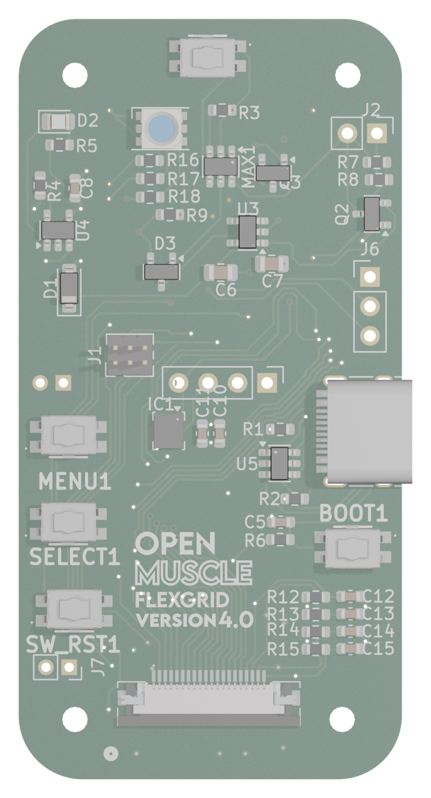
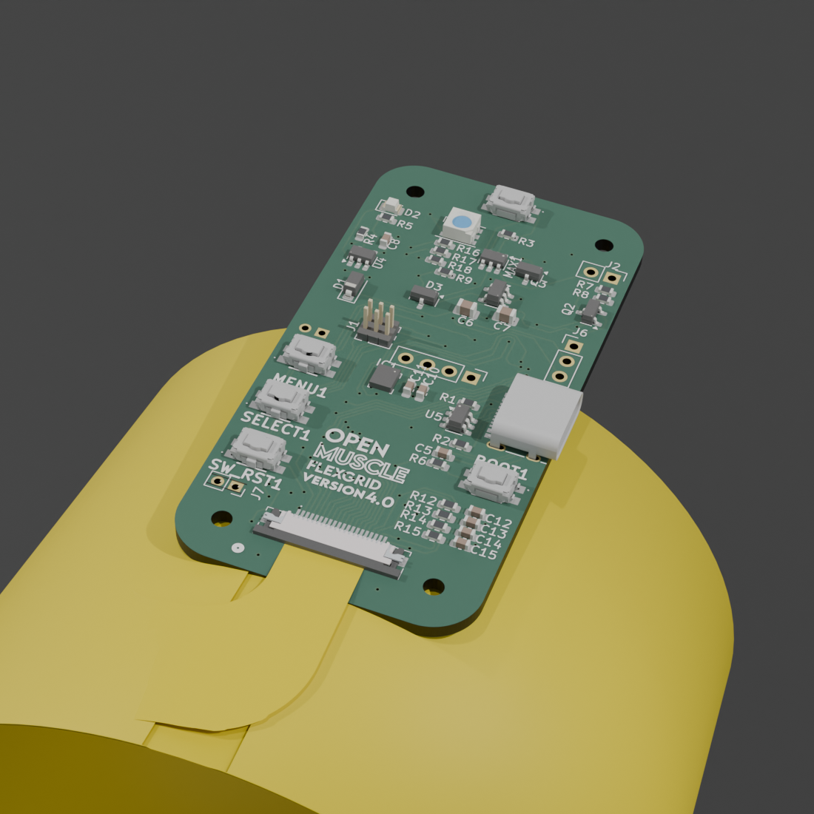
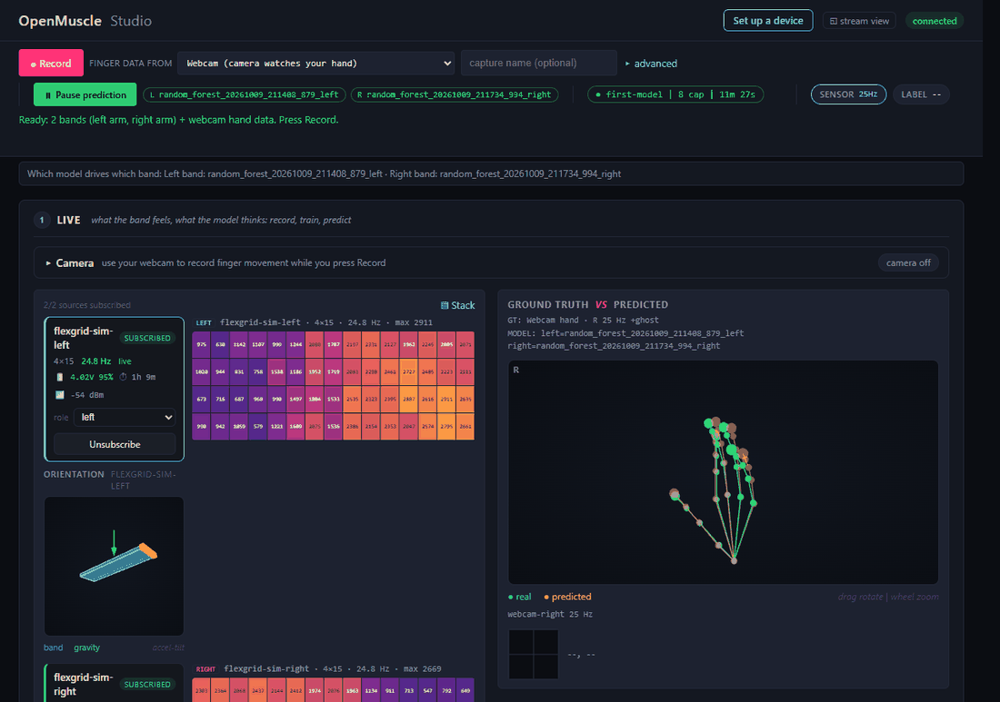

Day one, in order. Allow about an hour the first time, mostly waiting for the install and for charging.
1Charge
2Switch on
3Install
4Start
5Wi-Fi
6Heatmap
7Camera
8Record
9Train
10Predict
11Send back
Why this exists
OpenMuscle is a low-cost, open-source wearable that predicts finger movement from your muscles. Each FlexGrid band has 60 pressure-sensing cells that feel the pressure of the muscles under them (not their electrical signals). While you move, your computer's camera watches your fingers and the software learns the link; afterwards the band alone predicts your finger movement. It aims at reliable finger curl and grip force, not joint-by-joint precision. The bands use Wi-Fi only (no Bluetooth). Everything runs on your own computer; recordings stay on it until you choose to send them.
You need: 2 FlexGrid bands, the USB-C cable, a computer with a camera, Chrome or Edge, internet (once), and 2.4 GHz Wi-Fi with its password or a phone hotspot.
OpenMuscle is a research prototype. It is not a medical device and must not be used to diagnose, treat or monitor any condition or to make any medical decision. to confirm = not yet checked on a real band or computer.
The band
What is on the board
The letters are used again in steps 1 and 2

Power button (SW_PWR1)Short press: on. Short press again: off. Press feel: to confirm
Status lightOne RGB light: color plus pattern say what the band is doing (page 2).
Screen connectorThe optional screen plugs in here. Kit bands ship without it.
USB-CCharges the band; use the supplied USB-C cable. Readings go over Wi-Fi.
BOOT (printed BOOT1)Restarts the band (chip reset). Nothing else.
CHRG light (tiny, D2)The charger's own light: believe it for "is it charging". Its color: to confirm
MENU (printed MENU1)Tap: status page, again for page 2, then the live grid. Hold 2 s: charge mode.
SELECT (printed SELECT1)Tap: pause or resume sending (Wi-Fi stays on).
SW_RST1 (download mode)For reflashing a stuck band: hold it while pressing BOOT. Leave it alone in normal use.
Sensor connectorThe flat tail of the sensor sheet slots in here.
Dark badge: confirmed from the design files. Amber badge: one detail not yet seen on a real band (to confirm).
3D render of the V4 board, the side facing away from your skin (the blue dome is not a lit state). Hold MENU and SELECT together for 3 s to forget the Wi-Fi and return to WIFI SETUP (magenta blink; let go early to cancel). Buttons do nothing while the band shows WIFI SETUP.
1Unbox and charge
Plug the supplied USB-C cable into the band and a USB power source. Charge both bands while you do steps 3 and 4. Charge and running times are not measured yet. to confirm
Trust the tiny CHRG light (H) for "is it charging"; the status light only guesses that USB is plugged in.
Charge mode (hold MENU 2 s) charges faster, but only once the band has joined your Wi-Fi (after step 5); tap SELECT or unplug to leave it. On USB it can start by itself after 5 minutes: normal.
Stop using a band whose battery looks swollen or damaged.
2Switch on
Use the power button (F, top edge): a short press switches on, a short press again switches off.
Whether a press while USB is plugged in switches it off is not checked yet. to confirm
A new band blinks blue. Kit bands have no screen: the setup Wi-Fi name and password are on the band's sticker. Two quick blinks, then a pause, is normal.
OpenMuscle starter kit: cheat sheetPage 1 of 4
Reference
The status light: color plus pattern
Read both. Orange and amber are the same color: steady = working, blinking or pulsing = trouble.
Blue, one blink a second.WIFI SETUP (step 5).
Blue, two quick blinks, pause. Normal for a kit band: read the sticker.
Blue, steady. Joining your Wi-Fi, up to 20 s.
Green, steady for 2 s. Joined: WIFI OK.
Brief pulse every 3 s. Waiting for the computer. Role color: left, right, labeler, none.
Orange, steady. Sending data: the normal light. A short cyan flash every 5 s: USB plugged in.
Cyan, slow breathing.PAUSED. Tap SELECT to resume.
Light off. Switched off, or battery empty with USB unplugged.
Purple, slow pulse, never dark.CHARGING, Wi-Fi off. Tap SELECT or unplug to leave it. Steady purple: full (the band's own estimate).
Green, breathing.RECORDING to an SD card (hold SELECT 2 s; only if your kit has one to confirm), Wi-Fi off. Tap SELECT to stop.
Amber, one blink a second.LOW BATTERY: plug in.
Amber, slow pulse, never dark.WIFI LOST: the band reconnects by itself.
Amber, fast blink.WIFI FAILED and why. Back at WIFI SETUP in 30 s, same name and password.
Red, fast blink. Recovered from a crash; clears after 60 s of normal running.
Strips run left to right in time. Two blinks with a fitted screen that stays blank: needs repair. Dim blue breathing: switching on. Magenta blinking: MENU and SELECT held. When two things are true at once the band shows one light: crash recovery and the button-hold colors come first, and paused, charging or recording hide the low-battery and Wi-Fi-lost lights. Case visibility: still being checked to confirm.
Reference
The screen (only if your band has the optional screen)
Examples only.
WIFI SETUP
OM-flexgrid-
d7af0b
PW kd3mpq72xy
Setup. Top line alternates with "see guide". Name wraps; password after PW.
WIFI OK
192.168.1.23
flexgrid-d7af0b
role: left
Status 1. Tap MENU. Also shows for 15 s after joining.
BAT 64% 3.95V
MODE STREAM
HUBS 1
NET MyWifi
Status 2. Tap MENU again. A rough battery percent. HUBS = computers receiving.
Live grid. Normal running; a bigger mark means a harder press. A quick sensor check.
Four lines of 16 characters. PAUSED, CHARGING and RECORDING stay on the screen until you leave that mode. LOW BATTERY repeats every 5 minutes; WIFI FAILED (with its reason) and NO SD CARD appear briefly. How readable the screen is in a case or sleeve is still being checked to confirm.
Reference
Wearing it
to confirm The placement wording below is not yet confirmed by the hardware owner.

ab
Render. The sheet's real color is not confirmed to confirm.
aThe circuit board faces away from your skin, so you can see the light and reach the buttons and the USB-C socket (and read the screen, if fitted).
bThe sensor sheet (the flexible side with the grid of cells) goes against bare skin, never over a sleeve. Left band on the left forearm, right band on the right, long side along the forearm, elbow toward wrist.
Where: the thicker, muscular part of the forearm, a hand-width or two below the elbow crease, centered on the bulge when you make a fist. Not the bony wrist or the soft elbow.
How tight: snug, not tight: one finger slides under the strap and your fingers move freely. A deep mark after ten minutes, or a tingling or cold hand: loosen it.
Same place every time, or the score drops. Mark two skin-safe pen dots just outside the band's edge. If it slips during a recording: stop, fix it, start a new recording.
3Install the software once, about 5 to 10 minutes; Chrome or Edge, Python 3.10 or newer, internet needed
At github.com/Open-Muscle/OpenMuscle-Software click Code, then Download ZIP. Extract the whole zip (Windows: right-click, Extract All; Mac: double-click); never run the installer from inside it. Open the extracted folder, then installers.
Windows. Open windows, double-click Install-OpenMuscle.bat. A blue "Windows protected your PC" window: More info, then Run anyway. If Python is missing, tick Add python.exe to PATH on the python.org page and run it again. At Add the firewall rule now? (Y/n) press Enter, then Yes. Wait for "OpenMuscle is installed."
Mac (macOS 12 or newer) to confirm Open macos, double-click install.command. "Unidentified developer": right-click it, Open, Open again. If it asks for Python, install it from python.org and run it again.
Linux. In a terminal in the extracted folder run bash installers/linux/install.sh. If it prints a firewall line (such as sudo ufw allow 3140:3141/udp), copy it into the terminal.
Running an installer again is safe and never touches recordings.
OpenMuscle starter kit: cheat sheetPage 2 of 4
4Start the Studio
Double-click OpenMuscle on the Desktop (Linux: applications menu). A black window opens: leave it open, closing it stops OpenMuscle. On Windows do not click inside it (press Enter or Esc if the page stops updating).
If the computer asks to let OpenMuscle or Python receive network connections, choose Allow (Windows: keep Private networks ticked). A Mac also asks to find devices on your local network: Allow, or bands will not appear. Keep the laptop plugged in and awake while recording.
Your browser opens http://localhost:8000, the OpenMuscle Studio (else paste that into Chrome or Edge; if 8000 is busy, use the address the black window prints). No band found yet. is normal until step 5.

abcdefgh
aSet up a device
bconnected badge
cRecord (then Stop)
dThe Ready line
eSENSOR rate in Hz
frole menu
gBand heatmap
hCamera hand view
Practice data. Help, beside Set up a device, is not in this picture.
5Put each band on your Wi-Fi once per band; the Studio walks you through it
Band ready: blue light blinking. One band at a time: join only the OM- network whose last six characters are on its sticker.
Open the wizard. Studio: Set up a device, I am ready, A band.
Join the band. Join the Wi-Fi starting OM- (password: on its sticker or screen). Click Yes, that is the one.
Your Wi-Fi. Pick yours (2.4 GHz only) or type it, plus its password. Send to the device. After about 20 s rejoin your usual Wi-Fi.
All set. Finish shows All set. The band shows green for 2 s (a screen also shows WIFI OK). Repeat for band two.
Your Wi-Fi must be 2.4 GHz, password only (no username), no web sign-in page, not a guest network, and the computer on it too. Otherwise use a phone hotspot (iPhone: Allow Others to Join, Maximize Compatibility; Android: 2.4 GHz).
Typo? About 30 s after a failed join the band is back at WIFI SETUP with the same name and password (a screen says why). Leave Remember for the next device ticked (it is ticked already) when you set up band two, and forget the OM- network on your computer afterwards. No internet while on OM-: normal. Privacy: on your computer the password stays in this browser tab only and nothing is sent online; the band keeps it in its own memory until you hold MENU and SELECT for 3 s (also how to move a band to another network, or to erase it before you return a band).
6See the heatmap squeeze test
Put the band on as on page 2. Each band gets a card and a heatmap: set its role menu to left or right for that arm. With two bands the arms must differ or Record is blocked.
Squeeze test, before every session. Relaxed, the grid is mostly dark or a quiet color. Press firmly with a fingertip, then slowly make a fist: pink, orange and yellow cells that fade as you relax. A region that never changes is not touching skin: refasten. Bright at rest: too tight.
7Turn on the camera
Open the Camera bar, press Start camera, choose Allow (the first time needs internet once, for the hand tracker).
Hold your hand up, palm toward the camera, fingers visible, in bright even light: a green skeleton follows it.
Under Record the line should read Ready: 2 bands (left arm, right arm) + webcam hand data. Press Record. If it gives a reason instead, fix that first.
No video is saved, only joint positions. No camera: No labeler keeps band data but cannot train a model.
8Record eight short takes about 15 minutes
Press + session: name first-model, a made-up participant code such as P01, Arm: the band's arm (Both arms for two bands), Finger data from Webcam, then Start session. Do not move a band until the last take; if you must, start again.
Two bands, one camera: its one hand supplies the finger data for both bands. Move both hands together, same movement at the same time, one in front of the camera. In More details set Mirrored to Yes, labels measured on the left hand (or right), the hand the camera watches. Or wear just one band, on that arm.
Every take: 30 seconds, never under 10. Press Record. First 5 s: hand completely still and relaxed, so the model sees "no movement". Then the movement, slow and smooth, until about 0:30. Press Stop, read the card, press Record next take, then Record.
Good
Nothing wrong found.
Check
Usable; hover for the reason.
Bad
Better redone; do not tick it for training.
hand lost, labels missing: keep your hand in view. idle labeler: move more. weak signal: band not touching; adjust it and restart from take 1. too short: aim for 30 s. Then record that take again.
OpenMuscle starter kit: cheat sheetPage 3 of 4
8The eight takes slow beats fast; a capture name such as 01-open-close is optional
1 and 5: open and closeOpen the hand wide, close to a loose fist, repeat: 8 cycles of about 3 s.
2 and 6: single fingersCurl each finger toward the palm and straighten it, twice each: thumb to little (about 5 s each).
3 and 7: gripsFist, pinch (thumb to index), point (index straight, others curled), then repeat once. Each: close 1 s, hold 2 s, open 1 s, rest 1 s.
4 and 8: free mixAny mix of the above, with short rests. The last one or two takes are kept aside to test the model.
Takes 5 to 8 repeat 1 to 4 in order at your natural pace. In a hurry: skip takes 4 and 7.
9Train
In Data & Models (or press Go to Train) tick your eight takes; do not tick any take marked Bad (untick it if Go to Train ticked it). Leave Learn the whole hand (big model) unticked: it makes a large model and only draws a 3D hand.
Press Train. Allow about 4 to 5 minutes per band; two bands train one after the other. Do not close the page.
You get a result card per band: one bar per finger (green 50% and over follows well, amber 25 to 49% partly, red barely) and a What to do next line: do that one step. Could not train yet says what to change.
The score words
Good 75%+
Follows your fingers well. Try it live.
Fair 50%+
Follows the big movements. Record more takes, one finger each; train again.
Weak 25%+
Picks up a little. Check the fit; record a rest take and slow single-finger takes.
Not working yet
Under 25%. Check the fit and the camera view; record new takes.
Not tested yet
Record a longer take with finger movement.
The score is on takes the model never trained on (100% = perfect). One take alone can score at most Fair: use at least two.
10Watch it predict
If the result card says Prediction starts automatically it is running; otherwise press Predict (Pause prediction stops it). In Ground truth vs Predicted the green hand is what the camera sees; a line under it reads out what the model thinks each finger is doing, from the bands alone, as a percent of curl (0% straight, 100% fully curled).
Good: the percentages follow your fingers with a short delay and fall to near 0% when you relax. Bad: they barely move or jump about while you are still, or it went wrong after the band moved. Fix: wear the band the same way, record more varied takes, train again. This model may not match. means train a new one.
11Your files, and what to send back
Everything is on your own computer, in a folder called OpenMuscle in your home folder. Nothing is uploaded. Data & Models shows it (Open folder, Copy path). The camera picture is never saved. Back up after each recording day, with OpenMuscle closed: copy captures, sessions and models to an external drive.
To send recordings: in Session click Export session (or tick takes, then Export selected). Leave Include full raw streams and Include my notes off unless asked. Click Download zip: it lands in Downloads, with a copy in OpenMuscle/exports. Models are never included. Many email services refuse over about 20 MB: export one session at a time.
Keep private: the list linking codes to people (outside the OpenMuscle folder), raw streams, notes and models. Treat recordings as personal data.
If something goes wrong Help (top right of the Studio), then Troubleshooting; Run the check first names the likely cause
No band found yet
Band joined (green light; WIFI OK on a screen)? Computer on the same 2.4 GHz Wi-Fi (not guest, VPN or OM-)? Firewall, the usual cause on Windows: allow private networks (UDP 3140 and 3141, if IT asks). Wait 30 s, then Add a device by IP address, Scan subnet. Restart the band.
Heatmap flat or all bright
All dark: not touching skin, refasten. Bright at rest: too tight. Badge says disconnected: keep the black window open and reload.
Record will not start
The line beside it says why: set left or right in each role menu, or switch the camera on.
Camera blocked or busy
Camera icon in the address bar, Allow. Close Zoom, Teams and other tabs using the camera.
Train grayed out
Tick at least one take, or read the message (too little recording, band not touching, or finger data that never moved).
Still stuck
Still stuck in Troubleshooting shows how to make a short report: add --report to the line Run the check first gives. It never holds Wi-Fi names, passwords or recordings; do not attach recordings or put anyone's name in it.
Practice data: the Studio's practice mode. Kit bands have no screen: use the sticker. Designs: CERN-OHL-S-2.0. Firmware and software: MIT.